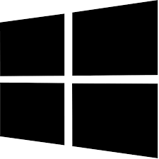

 Microsoft Skills
- Microsoft Word: Word processing software for creating and editing documents.
- Microsoft Excel: Spreadsheet software for data analysis, calculations, and reporting.
- Microsoft PowerPoint: Presentation software for creating slideshows and visual aids.
- Microsoft Outlook: Email client and personal information manager for managing emails, calendars, and contacts
- Microsoft Access: Database management software for creating and managing databases.
- Microsoft Teams: Collaboration platform for online meetings, messaging, and file sharing within teams and organizations
- Microsoft SharePoint: Web-based collaboration and document management platform for sharing and organizing information within organizations.
- Microsoft Power BI: Business intelligence tool for data visualization and interactive reporting
- Microsoft Azure: Cloud computing platform for building, deploying, and managing applications and services.
- Microsoft Visual Studio: Integrated development environment (IDE) for software development and programming.
- Microsoft SQL Server: Relational database management system for storing and retrieving data.
- Microsoft Windows: Operating system for personal computers and servers.
- Microsoft OneDrive: Cloud storage service for storing and accessing files and documents online.
- Microsoft Dynamics 365: Suite of enterprise resource planning (ERP) and customer relationship management (CRM) applications for business management.
Proficiency in Microsoft skills is highly valuable in various industries and job roles. These skills enable me to be productive, collaborate effectively, and handle a wide range of tasks efficiently using Microsoft's popular software and tools.